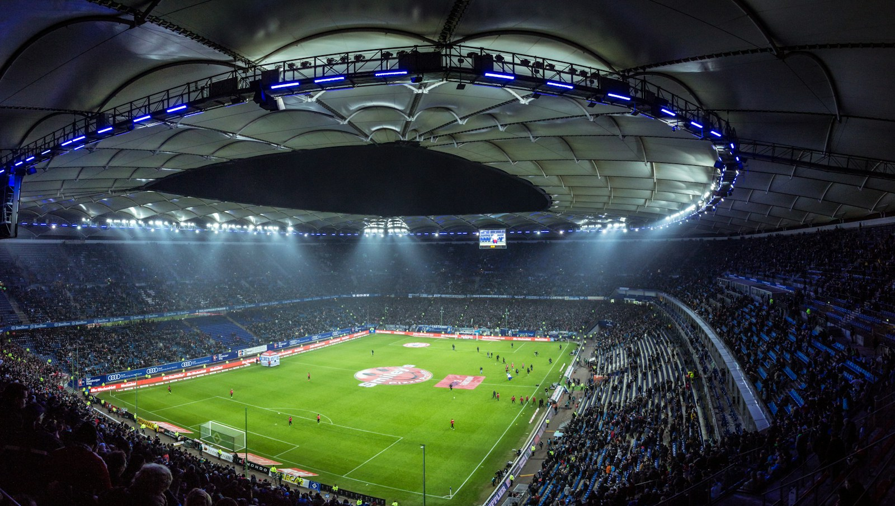

 FOOTBALL, FRONT AND CENTRE Make room for matchday. Follow fixtures and scores from approved data sources, all in one place. Browse fixtures 01 / 02 Volksparkstadion · Mario Klassen · CC0
THE BEAUTIFUL GAME Every fixture has a story. Check upcoming kickoffs, follow results and explore the competitions. Explore football 02 / 02 Volksparkstadion · Mario Klassen · CC0